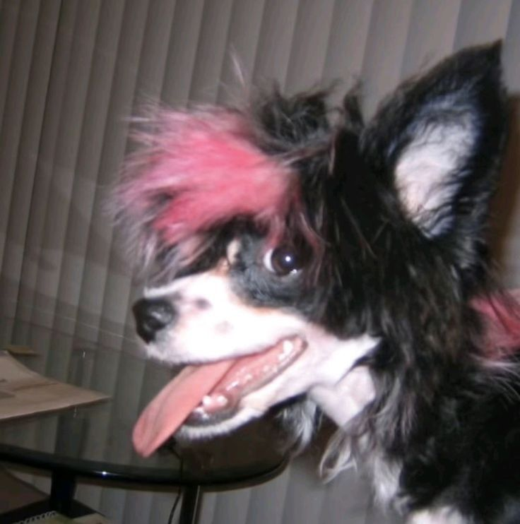

Nombre
:
Lumi
Edad
:
18 años
Juego
:
CS2
Presentación
¡Hola! Me llamo Leonel, aunque voy con el tag de "Lumi" para mayor comodidad. Soy un chico de 18 años estudiante que le gustan los juegos y codear cosas.
Desde siempre he tenido curiosidad por las pantallas y por la música pesada a volumen alto, al punto de que me quede sin tímpanos...
Aunque mi gusto por las computadoras viene más que todo por los videojuegos, últimamente veo más código, lo cual se me hace divertido pero en algunos casos frustrante.
Y por último pero no menos importante, el dibujo. Siempre me ha gustado desde pequeño, hasta que en mi último año decidí retomarlo como un pasatiempo. Hoy es otro de mis hobbies, junto a mi guitarra eléctrica y la programación.